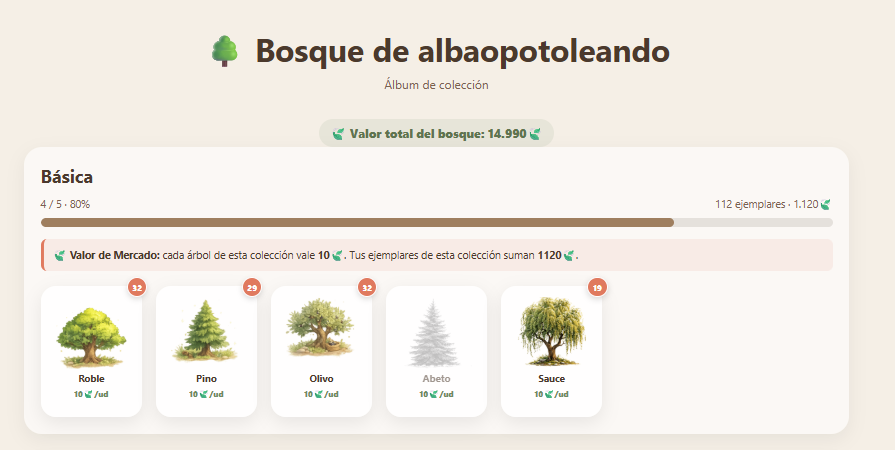

🌳 Guía del Bosque Virtual
📚 Ir directamente a...
Pulsa en el apartado que quieras consultar.
🌱 ¿Qué es el Bosque del canal?
- Plantándolos en un pomodoro: te unes con
!árboly validas al terminar. - Recibiéndolos mediante Bits: se añaden directamente a tu colección, sin tener que plantarlos.
- Por suscripción o renovación: recibes árboles sorpresa directamente en tu inventario.
🌿 Ejemplo rápido
Empieza un pomodoro y aparece un sauce. Te unes con!árbol, completas la sesión y validas con !cumplido.
Si la plantación sale bien, el sauce se añade a tu colección. Si ya tenías uno, pasas a tener 2 unidades.
Más adelante podrás consultar tu colección, verla en tu álbum visual y, cuando desbloquees el Mercado, decidir si conservas esos ejemplares o los utilizas en un intercambio.
🚀 Cómo participar en una plantación
1. Se abre una nueva sesión
Al comenzar un pomodoro, el bot anunciará qué árbol se va a plantar. Puede ser el árbol previsto por defecto, uno elegido previamente mediante una recompensa de puntos del canal o un Árbol de Autor especial. Las solicitudes aparecen en la cola del HUB y Alba las irá plantando en los siguientes pomodoros disponibles.2. ¡Únete al equipo!
Mientras la inscripción esté abierta, escribe:!árbol
Te une a la plantación colectiva y añade tu semilla al contador de participantes.
3. Consulta qué está creciendo
!infobosque o !plantando
Muestra la especie que está en pantalla y cuántos guardabosques se han apuntado.
✅ Validación y crecimiento
!cumplido
Confirma que has completado tu sesión. Si el árbol crece correctamente, se añadirá a tu inventario. Si ya lo tenías, sumarás otra unidad.
!fallé
Úsalo si tuviste que abandonar o te distrajiste demasiado. No hay penalización personal.
🛍️ Árboles elegidos con puntos del canal
El árbol se coloca en la cola del HUB y se planta en una sesión posterior. Para conseguirlo debes participar y validar el pomodoro.
La recompensa Elijo Árbol: Colección Suscriptores cuesta 5.000 puntos y solo puede utilizarla una persona con suscripción activa.
Durante la plantación puede participar cualquiera: si completa la sesión, una persona suscrita recibe el árbol exclusivo de Suscriptores; quien no esté suscrito recibe un árbol aleatorio de la colección Básica. Si usa
!fallé, no recibe ningún árbol.
Julio · Verano Agosto · Lavanda Septiembre · Hidrangea Octubre · Otoño mágico Noviembre · Castañas Diciembre · Navidad Enero · Nieve Febrero · San Valentín Marzo · Sakura Abril · Lluvia Mayo · Flores blancas Junio · Mar
🔄 Mercado de árboles
El Mercado se desbloquea al completar 39 pomodoros, el equivalente aproximado a una semana completa de sesiones del canal. El bot te avisará automáticamente cuando lo consigas y, desde ese momento, queda desbloqueado para siempre. No se muestra un contador de progreso.
Cada operación se realiza mediante la recompensa de Twitch Mercado de árboles, que cuesta 500 PulpiPuntiños. Ese canje ya es el coste en puntos del canal: dentro del Mercado no tienes que pagar más puntos.
Estos son los valores actuales del Mercado. Si se reajusta la economía del bosque, pueden actualizarse sin cambiar el funcionamiento del sistema.
| Colección | Valor por unidad |
|---|---|
| Básica | — |
| Tropical | — |
| Desierto | — |
| Frutales | — |
| Española | — |
| Invernal | — |
| Familia | — |
| Otoñal | — |
| Japonesa | — |
| Fantástica | — |
| Suscriptores | — |
| Oposiciones | — |
| Flores | — |
| Autor | — |
Cargando valores actuales del Mercado…
Usa este formato:
árbol deseado | árbol x2, otro árbol
Ejemplo:
pino_japones | abeto_nevado x2, sauce x3
El sistema suma automáticamente el valor 🍃 de los árboles que entregas.
El intercambio se realiza y los árboles entregados desaparecen de tu inventario. El nuevo árbol se añade a tu colección.
El intercambio también se realiza, pero la diferencia no se devuelve. El Mercado lo considera una pequeña propina 😂
Si no tienes el Mercado desbloqueado, el formato es incorrecto, el árbol no existe, no tienes las unidades indicadas o el valor entregado no alcanza el necesario, el canje se rechaza y se te devuelven los 500 PulpiPuntiños.
!mercado
Explica el funcionamiento del Mercado, muestra los valores por unidad y te indica el valor total 🍃 de tu colección actual.
Tus 🍃 no son un saldo independiente: representan el valor de los árboles que tienes en ese momento.
💎 Árboles y ventajas mediante Bits
- árbol sorpresa;
- árbol elegido;
- packs sorpresa de 3 o 5 árboles;
- regalar una semilla a otra persona;
- impulsar el próximo pomodoro;
- crear un Árbol de Autor.
🎁 Regalo por suscripción
| Meses acumulados | Árboles sorpresa recibidos |
|---|---|
| 1–2 meses | 1 árbol |
| 3–4 meses | 2 árboles |
| 5–6 meses | 3 árboles |
| 7–8 meses | 4 árboles |
| 9–10 meses | 5 árboles |
| 11 meses o más | 6 árboles |
🌟 Árboles de Autor
⚠️ Regla del 20% en los Árboles de Autor
!fallé:
- el Árbol de Autor se considera perdido para la plantación comunitaria;
- nadie del grupo lo recibe, aunque haya cumplido individualmente;
- la persona que adquirió el árbol sí lo conserva si validó con
!cumplido.
Ejemplo: si participan 10 personas y fallan 3, el porcentaje es del 30%. El árbol se pierde para el grupo, pero la persona compradora queda protegida si cumplió.
🔍 Consultar colecciones
!colecciones
Muestra todas las colecciones disponibles y tu progreso en cada una.
!árboles [colección]
Enseña las especies de una colección concreta, cuántas unidades tienes y su valor 🍃. Ejemplo: !árboles japonesa.
!bosque
Resume cuántos árboles tienes en cada colección y el valor 🍃 total actual de tu bosque.
!mercado
Consulta cómo funciona el Mercado, los valores por unidad y el valor total 🍃 de tu colección.
!rankingbosque
Consulta el ranking de los bosques más grandes del canal.
🏆 Tu álbum visual
👀 ¿Cómo se ve un bosque terminado?
Este es un ejemplo real para que se entienda cómo se organizan las colecciones, las unidades repetidas y el valor total del bosque.

🌱 En la colección Básica, por ejemplo, puedes ver especies como:
🔗 Guías relacionadas
🌳 Bosque virtual:
https://bibiopotoleando.github.io/bosque-visual/guia_bosque.html
📝 Tareas:
https://bibiopotoleando.github.io/guia-tareas/guia_tareas.html
🎁 Canjeos:
https://bibiopotoleando.github.io/guia-canjeos/guia_canjeos.html
📌 Estados:
https://bibiopotoleando.github.io/estados-y-bebidas/estados.html
☕ Bebidas:
https://bibiopotoleando.github.io/estados-y-bebidas/bebidas.html
🎯 Retos:
https://bibiopotoleando.github.io/retos/retos.html
🎮 Minijuego:
https://bibiopotoleando.github.io/minijuego-guia/index.html
🏅 Insignias:
https://bibiopotoleando.github.io/guia-insignias/guia_insignias.html
📦 Material:
https://bibiopotoleando.github.io/estados-y-bebidas/material.html
👾 Discord:
https://bibiopotoleando.github.io/discord/index.html